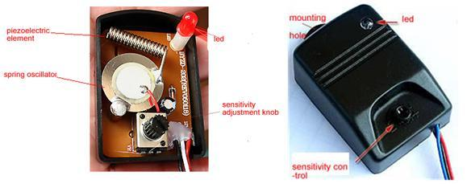
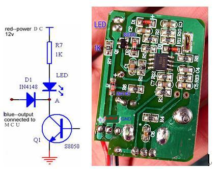

The vibration sensor is used for testing the impact force．It has high vibration detection sensitivity and the environmental of sound signal suppression, which has strong ability to engage in interference.
Model:SEN126B1B
http://www.seeedstudio.com/depot/images/product/pvs3.jpg http://www.seeedstudio.com/depot/images/product/pvs.jpg

Cried open ：It is consisted of piezoelectric element, spring oscillator, Sensitivity adjustment knob, and led. We can regulate the knob to adjust the sensitivity. For example when adjusting the knob clockwise, the sensitivity increases, oppositely it reduces and outputs alarm signal, led will light while testing the certain scope shock.
Security and alarm.(motor vehicles, safety box, treasury doors and windows etc.)
The warnings and wrong operations possible cause dangerous.
It is the schematic, the circuit about Eagle resource like .pdf should linked here in order to avoid memory exhausted.

This sensor uses open-collector output transistor drive mode, you can directly interface with MCU. Connecting the white line (output) to arduno/MCU‘s digital I/0, then upload code . First set the port of MCU as”1”(high),then pull -up resistor (R7)output DC12v.When the sensor detect the vibration signal,Q1 break over. The voltage of a drop from 12v to 0.1v and white line drop-down to0.8v, while MCU can detect low voltage.
int anologpin = 3;//output pin connected to pin3// int ledpin = 13; int val; void setup() { pinMode(pin,OUTPUT); pinMode(ledpin,INPUT); } void loop() { val= digitalgread; if (val>512) {; ditalread(ledpin,HIGH); }
The projects and application examples.
All the components used to produce the product.
Please list your question here:
If you have questions or other better design ideas, you can go to our forum or wish to discuss.
| Revision | Descriptions | Release Date |
| v1.0 | Initial public release | Jun 08, 2009 |
Bug Tracker is the place you can publish any bugs you think you might have found during use. Please write down what you have to say, your answers will help us improve our products.
The Additional Idea is the place to write your project ideas about this product, or other usages you've found. Or you can write them on Projects page.
The resources need to be downloaded, like Eagle file, Demo code, project or other datasheet.
Click here to buy: http://www.seeedstudio.com/depot/piezoelectric-vibration-sensor-p-391.html?cPath=84_88&zenid=020999c566d2f31841dc54602b7d02ef.
Other related products and resources.
This documentation is licensed under the Creative Commons Attribution-ShareAlike License 3.0 Source code and libraries are licensed under GPL/LGPL, see source code files for details.
Links to external webpages which provide more application ideas, documents/datasheet or software libraries
Copyright (c) 2008-2016 Seeed Development Limited (www.seeedstudio.com / www.seeed.cc){kind=link}
{kind=link}